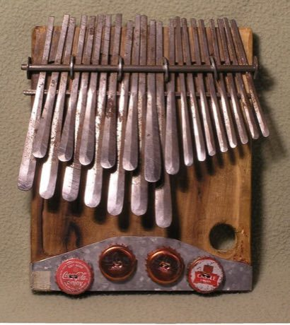

Home / Crossroads and Golden Ages / Africa: Southern Africa
Playable heritage gameMbira
Also known as Kalimba · Sanza · Thumb Piano
The mbira is a hand-held instrument of the Shona people of Zimbabwe: iron tines on a wooden board, plucked with the fingertips and often set inside a gourd resonator with buzzing shells or bottle caps. Players weave a repeating cycle of notes whose two hands interlock.


How to play
- Twelve keys in order of pitch: the lower six are usually played by the left thumb and the upper six by the right.
- Notes fall toward the line; strike the key for each as it lands.
- Start with the caller cycle, then the answering cycle that fits in the gaps.
- Each cycle repeats twice, as a real piece loops round and round.
Rules at a glance
- Twelve keys in two rows form a seven-note scale that is like a major scale with a flat seventh.
- A cycle has twelve pulses; the two hands share them and notes fall on the pulse.
- A stroke on the pulse is perfect, a near one is good; extra strokes cost points.
About the tradition
The mbira has been played in Zimbabwe for many centuries, and its many tuning families and patterns are handed on between players. Related lamellophones are found across Africa, where they go by names such as sanza, kalimba and likembe.
Origins
Usually placed in the era of Crossroads and Golden Ages (about 500 to 1500), although its exact origins are uncertain, within the cultural world of Africa: Southern Africa.
Credits
- Tradition: Shona mbira music; cycles written for this game
- Photo: Alex Weeks, CC BY-SA 3.0, source on Wikimedia Commons
- Text: CC BY-SA 4.0, World Heritage Games.
Sources

Get the app
Mbira is one of 10 drums and rhythms in the Drum Music of the World app for iPhone, iPad and Android. Live on Google Play. Submitted to the App Store; in review, and the store link appears here the day it goes live. One app, many traditions, no account needed.
More games to play

Balafon Gourd Xylophone
Mali +2 · Musical instrumentsPlay preview · in the Drum Music of the World app
Shekere gourd rattle
Worldwide · Musical instrumentsPlay preview · in the Hand Drums of the World app